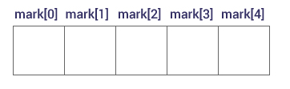

In this article, you will learn to work with arrays. You will learn to declare, initialize and, access array elements with the help of examples.
An array is a collection of a fixed number of values of a single type. For example: if you want to store 100 integers in sequence, you can create an array for it.
int data[100];
The size and type of arrays cannot be changed after its declaration.
Arrays are of two types:
data_type array_name[array_size];
float mark[5];
Here, we declared an array, mark, of floating-point type and size 5. Meaning, it can hold 5 floating-point values.
You can access elements of an array by indices.
Suppose you declared an array mark as above. The first element is mark[0], second element is mark[1] and so on.

It's possible to initialize an array during declaration. For example,
int mark[5] = {19, 10, 8, 17, 9};
Another method to initialize array during declaration:
int mark[] = {19, 10, 8, 17, 9};

Here,
mark[0] is equal to 19
mark[1] is equal to 10
mark[2] is equal to 8
mark[3] is equal to 17
mark[4] is equal to 9
int mark[5] = {19, 10, 8, 17, 9}
// insert different value to third element
mark[3] = 9;
// take input from the user and insert in third element
scanf("%d", &mark[2]);
// take input from the user and insert in (i+1)th element
scanf("%d", &mark[i]);
// print first element of an array
printf("%d", mark[0]);
// print ith element of an array
printf("%d", mark[i-1]);
// Program to find the average of n (n < 10) numbers using arrays
#include <stdio.h>
int main()
{
int marks[10], i, n, sum = 0, average;
printf("Enter n: ");
scanf("%d", &n);
for(i=0; i<n; ++i)
{
printf("Enter number%d: ",i+1);
scanf("%d", &marks[i]);
sum += marks[i];
}
average = sum/n;
printf("Average = %d", average);
return 0;
}
Output
Enter n: 5
Enter number1: 45
Enter number2: 35
Enter number3: 38
Enter number4: 31
Enter number5: 49
Average = 39
Suppose you declared an array of 10 elements. Let's say,
int testArray[10];
You can use the array members from testArray[0] to testArray[9].
If you try to access array elements outside of its bound, let's say testArray[12], the compiler may not show any error. However, this may cause unexpected output (undefined behavior).